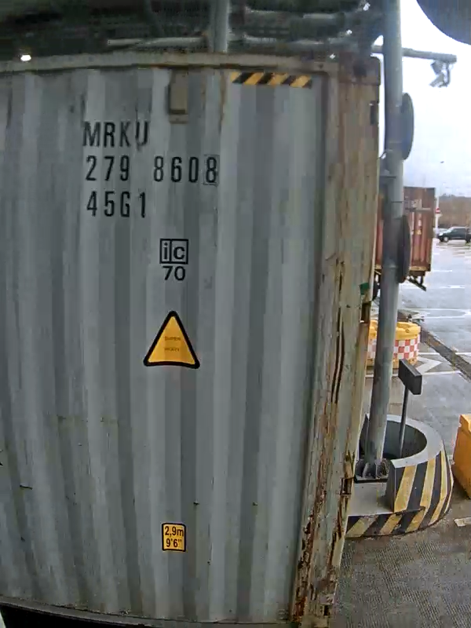
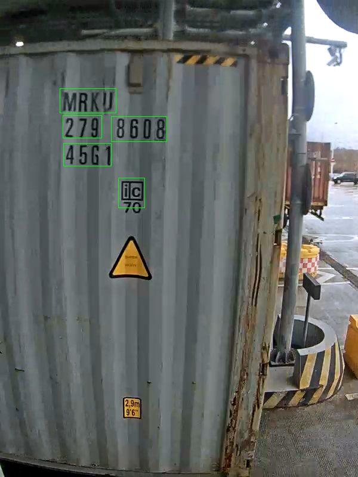
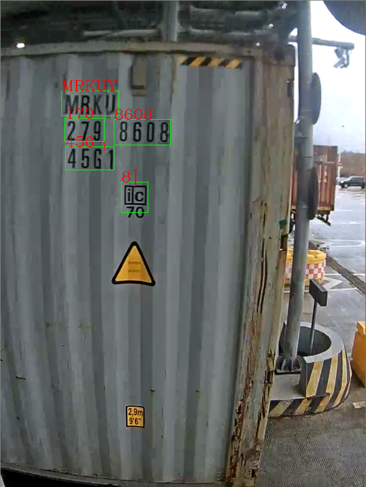

集装箱OCR：使用EAST和Tesseract
本篇文章主要记录下使用EAST和Tesseract做自然场景中集装箱上字符OCR的一个简单的实现。
在看具体问题之前先来谈谈自然场景中文本检测这个领域。自然场景的文本检测和识别一直以来都是一个比较难的问题，在深度学习走红之前，都是绞尽脑汁的变着法子提取有用的特征，然后做定位检测。得到的结果也是在一个场景下还过得去，换个场景就是一塌糊涂。深度学习的方法简化了这个人工干预的过程，直接使用比较复杂的网络，然后进行训练，这样得到的结果直接的就碾压了提取特征后定位检测得到的结果。当然，这样的代价就是虽然效果好，但是为什么这样效果好呢？很难讲清楚。集装箱OCR问题是自然场景中文本检测大问题的一个具体工程实践问题。
1.问题的分析
在解决问题前我们一般都会先看看获取的图像是什么样的，这样可以大概的评估出来我们应该使用什么样的算法。下图是监控摄像头拍摄到的画面，我们需要完成的就是把及上面的那些字母和数字识别出来。

从上图中看到，这显然是属于自然场景下的OCR问题，首先要做的就是文本的检测，文本检测目前效果不错的有EAST，CTPN等等。考虑到EAST有现成的模型和开源代码可以使用，首先就使用EAST来测试看看文本检测的效果
2.EAST文本检测
使用的模型来源于Adrian小哥的这篇文章。 因为加载模型的时候我们需要使用到OpenCV的dnn模块，所以我们需要使用OpenCV3.4.2或更高版本， 这里我使用的环境是：
opencv-python==3.4.5.20
numpy==1.15.0
imutils==0.5.2
pytesseract==0.2.6
Pillow==5.1.0
上面的库中imutils是为了方便的得到文本区域的bounding box的，Pillow是一个图像处理的库，这里我们用它来获取图像矩形的数据。pytesseract则是tesseract的接口，用来调用tesseract进行文本内容识别的。 环境完成好之后我们首先来实现文本的检测。
import numpy as np
import cv2
import time
from imutils.object_detection import non_max_suppression
import pytesseract
from PIL import Image
WIDTH = 640
HEIGHT = 800
net_file = "frozen_east_text_detection.pb"
min_confidence = 0.5
image_path = "3.png"
image = cv2.imread(image_path)
orig = image.copy()
(h, w) = image.shape[:2]
# 设置图像的宽和高
(newW, newH) = (WIDTH, HEIGHT)
rW = w / float(newW)
rH = h / float(newH)
# 将图像放缩为指定的大小
image = cv2.resize(image, (newW, newH))
(h, w) = image.shape[:2]
layers = ["feature_fusion/Conv_7/Sigmoid",
"feature_fusion/concat_3"]
print("[INFO] 加载检测模型")
net = cv2.dnn.readNet(net_file)
blob = cv2.dnn.blobFromImage(image, 1.0, (w, h),
(123.68, 116.78, 103.94), swapRB=True, crop=False)
start = time.time()
net.setInput(blob)
(scores, geometry) = net.forward(layers)
end = time.time()
print("[INFO] 检测使用 {:.6f} 秒".format(end - start))
# 从scores中获取行和列
(numrows, numcols) = scores.shape[2:4]
rects = []
confidences = []
for y in range(0, numrows):
scoresData = scores[0, 0, y]
xData0 = geometry[0, 0, y]
xData1 = geometry[0, 1, y]
xData2 = geometry[0, 2, y]
xData3 = geometry[0, 3, y]
anglesData = geometry[0, 4, y]
for x in range(0, numcols):
# 忽略置信度小于指定的概率
if scoresData[x] < min_confidence:
continue
# 计算偏移因子，因为我们得到的特征图将比输入图像小4倍
(offsetX, offsetY) = (x * 4.0, y * 4.0)
# 提取旋转角度进行预测，然后计算sin和cosine
angle = anglesData[x]
cos = np.cos(angle)
sin = np.sin(angle)
# 使用几何体体积导出边界框的宽度和高度
h = xData0[x] + xData2[x]
w = xData1[x] + xData3[x]
# 计算文本预测边界框的开始和结束（x，y）坐标
endX = int(offsetX + (cos * xData1[x]) + (sin * xData2[x]))
endY = int(offsetY - (sin * xData1[x]) + (cos * xData2[x]))
startX = int(endX - w)
startY = int(endY - h)
# 将边界框坐标和概率分数添加到各自的列表中
rects.append((startX, startY, endX, endY))
confidences.append(scoresData[x])
# 非极大值抑制在弱边界框和重叠边界框上的应用
boxes = non_max_suppression(np.array(rects), probs=confidences)
for (startx, starty, endx, endy) in boxes:
startx = int(startx * rW)
starty = int(starty * rH)
endx = int(endx * rW)
endy = int(endy * rH)
roi = orig[starty:endy, startx:endx]
cv2.rectangle(orig, (startx, starty), (endx, endy), (0, 255, 0), 1)
cv2.imshow("text Detection", orig)
cv2.waitKey(0)
运行上述的代码就可以得到文本检测后的结果了。

从上面的检测结果可以看到bounding box可以将我们想要的信息获取出来了，那么接下来的一步就是识别这些bounding box中的文本内容了。tesseract是OCR识别中一个现成的方案，所以就试试tesseract。
3.tesseract识别
有了上面的基础，使用tesseract识别就变得非常的简单，首先我们要确保我们的环境中已经安装了tesseract，而且可以在我们的cmd line中调用（即：环境变量中已经配置了它）。 识别的步骤就是讲上述的bounding box获取出来，依次的调用识别接口就可以完成了。

识别结果中看到，中间有相当一些字符识别的是不正确的。这个是因为tesseract本来的识别精度就不是特别的高，针对不同场景下的文本识别，如果需要使用tesseract的时候，一般都是需要自己重新训练的。在工程上，一般很少见到直接使用tesseract的，只是在验证阶段初步看看效果的时候才会使用tesseract。
完整代码：
import numpy as np
import cv2
import time
from imutils.object_detection import non_max_suppression
import pytesseract
from PIL import Image
WIDTH = 640
HEIGHT = 800
net_file = "frozen_east_text_detection.pb"
min_confidence = 0.5
image_path = "3.png"
image = cv2.imread(image_path)
orig = image.copy()
(h, w) = image.shape[:2]
# 设置图像的宽和高
(newW, newH) = (WIDTH, HEIGHT)
rW = w / float(newW)
rH = h / float(newH)
# 将图像放缩为指定的大小
image = cv2.resize(image, (newW, newH))
(h, w) = image.shape[:2]
layers = ["feature_fusion/Conv_7/Sigmoid",
"feature_fusion/concat_3"]
print("[INFO] 加载检测模型")
net = cv2.dnn.readNet(net_file)
blob = cv2.dnn.blobFromImage(image, 1.0, (w, h),
(123.68, 116.78, 103.94), swapRB=True, crop=False)
start = time.time()
net.setInput(blob)
(scores, geometry) = net.forward(layers)
end = time.time()
print("[INFO] 检测使用 {:.6f} 秒".format(end - start))
# 从scores中获取行和列
(numrows, numcols) = scores.shape[2:4]
rects = []
confidences = []
for y in range(0, numrows):
scoresData = scores[0, 0, y]
xData0 = geometry[0, 0, y]
xData1 = geometry[0, 1, y]
xData2 = geometry[0, 2, y]
xData3 = geometry[0, 3, y]
anglesData = geometry[0, 4, y]
for x in range(0, numcols):
# 忽略置信度小于指定的概率
if scoresData[x] < min_confidence:
continue
# 计算偏移因子，因为我们得到的特征图将比输入图像小4倍
(offsetX, offsetY) = (x * 4.0, y * 4.0)
# 提取旋转角度进行预测，然后计算sin和cosine
angle = anglesData[x]
cos = np.cos(angle)
sin = np.sin(angle)
# 使用几何体体积导出边界框的宽度和高度
h = xData0[x] + xData2[x]
w = xData1[x] + xData3[x]
# 计算文本预测边界框的开始和结束（x，y）坐标
endX = int(offsetX + (cos * xData1[x]) + (sin * xData2[x]))
endY = int(offsetY - (sin * xData1[x]) + (cos * xData2[x]))
startX = int(endX - w)
startY = int(endY - h)
# 将边界框坐标和概率分数添加到各自的列表中
rects.append((startX, startY, endX, endY))
confidences.append(scoresData[x])
# 非极大值抑制在弱边界框和重叠边界框上的应用
boxes = non_max_suppression(np.array(rects), probs=confidences)
for (startx, starty, endx, endy) in boxes:
startx = int(startx * rW)
starty = int(starty * rH)
endx = int(endx * rW)
endy = int(endy * rH)
roi = orig[starty:endy, startx:endx]
cv2.rectangle(orig, (startx, starty), (endx, endy), (0, 255, 0), 1)
roi = cv2.cvtColor(roi, cv2.COLOR_BGR2GRAY)
val, roi = cv2.threshold(roi, 0, 255, cv2.THRESH_BINARY + cv2.THRESH_OTSU)
roi = Image.fromarray(roi)
text = pytesseract.image_to_string(roi)
cv2.putText(orig, text, (startx, starty), cv2.FONT_HERSHEY_COMPLEX, 0.8, (0, 0, 255), 1)
cv2.imshow("text Detection", orig)
cv2.waitKey(0)
- 原文作者：Binean
- 原文链接：https://bzhou830.github.io/post/20190601%E9%9B%86%E8%A3%85%E7%AE%B1OCR%E4%BD%BF%E7%94%A8EAST%E5%92%8Ctesseract/
- 版权声明：本作品采用知识共享署名-非商业性使用-禁止演绎 4.0 国际许可协议进行许可，非商业转载请注明出处（作者，原文链接），商业转载请联系作者获得授权。